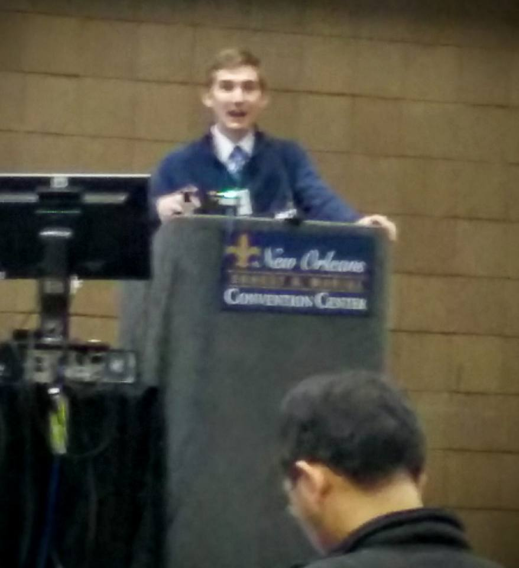
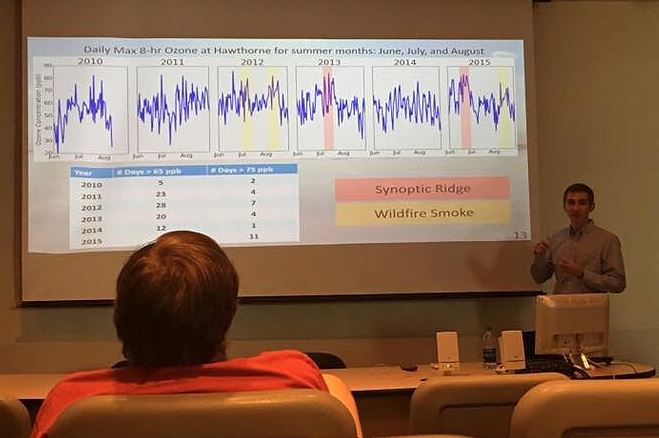
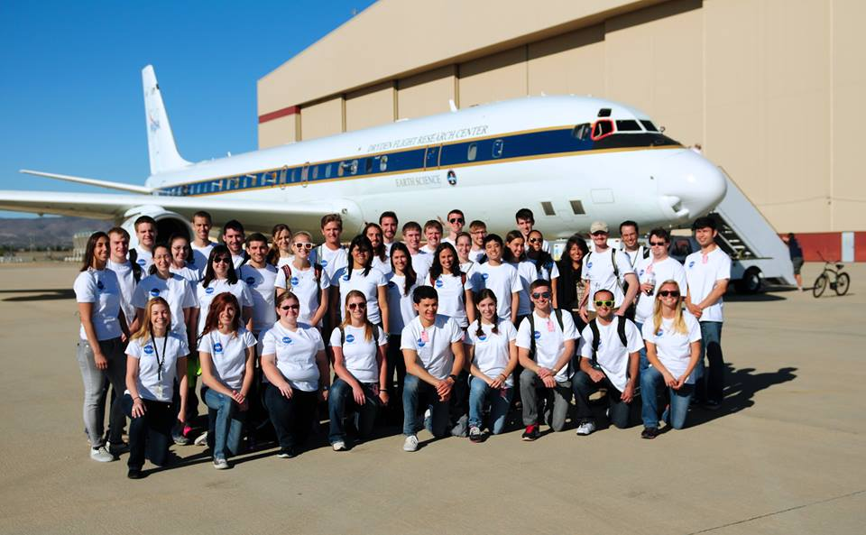
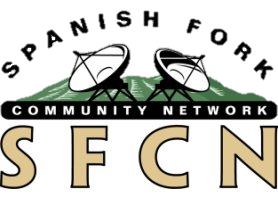
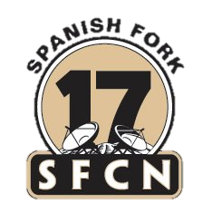
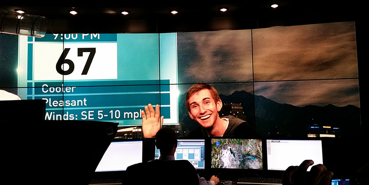

Presentations
Multi-Year Analytics of NOAA's High Resolution Rapid Refresh Model
Open Science Grid All-Hands Meeting Salt Lake City, Utah
March 21, 2018
HRRR and GOES-16 Archive at the University of Utah
Utah Chapter of the AMS/NWS Meeting Salt Lake City, Utah
January 18, 2018
High Resolution Rapid Refresh Model Analytics in a High Performance Computing Environment
Fourth Symposium on High Performance Computing for Weather, Water, and Climate Austin, Texas
January, 2018
View Abstract here
View Poster here
Communicating Fire Weather Risks at Short Lead Times using the High-Resolution Rapid Refresh (HRRR) Forecast Modeling System
2017 Conference on Fire Prediction Across Scales Columbia University
October 23, 2017
Confrence DetailsView Poster here
Cloud Archiving and Data Mining of High Resolution Rapid Refresh Forecast Model Output
2017 Modeling Research in the Cloud Workshop Boulder, Colorado
May 31, 2017
Workshop DescriptionView Poster here
Observations and Simulations of a Lake Breeze with High Ozone Concentrations in the Salt Lake Valley
2017 AMS Annual Meeting: 13th Symposium of the Urban Environment
January 25, 2017
AbstractView Poster here
Also presented at the University of Utah Data Day on January 13, 2017 (Info)
22nd Symposium on Boundary Layers and Turbulence: Impact of a Lake Breeze on Summer Ozone Concentrations in the Salt Lake Valley
July 23, 2016
AbstractView Slides here
Trace Gas Group Meeting: Observations and WRF Simulation of Lake Breeze Related Ozone Event
March 23, 2016

WRF Simulation of a Summer Ozone Event in the Salt Lake Valley Initialized from HRRR Analyses
January 13, 2016
A presentation at the AMS annual meeting 19th Joint Conference on the Applications of Air Pollution Meteorology. Received 2nd place oral presentation award.
*Awarded 2nd Place Oral Presentation at Conference on Air Pollution Meteorology
More info and recorded presentation here.
View Slides here
Questions received:
- Why is the HRRR lake temperature so cold? I have no idea. Maybe need to ingest higher resolution sea surface/skin temperature data. It doesn't appear the WRF model changes the lake surface temperature from timestep to timestep. So, where is HRRR getting its lake temperature and why doesn't it change?
- What was the reasoning for choosing the location for the plumes that I did. Wanted a plume ahead and behind the lake breeze front.
- How well is this model verified? It's better than the default options. Look at verification at 2-dozen sites here.
Recorded Presentation
Teaching the Weather Merit Badge: STEM Education in the Boy Scouts of America Organization
January 11, 2016
A presentation given at the AMS annual meeting 25th Symposium on Education
View Poster here
Weather Conditions in the Uintah Basin during SONGNEX
October 19, 2015
A presentation given in Boulder Colorado on the meteorology conditions during the P3 flights during the SONGNEX study in the Uintah Basin.
View slides here
Using HRRR Model Analyses to Improve Numerical Weather Prediction in Complex Terrain
November 18, 2015
A presentation given in my Mountain Meteorology class about my current research using the HRRR to initialize WRF simulations of a lake breeze.
View slides here

Great Salt Lake Summer Ozone Study Department Seminar
October 7, 2015
Presentation given at the UofU Atmospheric Sciences department seminar on October 7, 2015. A newspaper article about the study can be found here.
View slides here
View announcement here
Mountain Waves and Rotors
September 21, 2015
A presentation given in my Mountain Meteorology class on mountain waves and rotors in the atmosphere.
View Slides here
Boundary Layer Structures Associated With High Winter Ozone Concentrations in the Uintah Basin
August 2014
The summer of 2014, immediately after graduating from the Univeristy of Utah with a degree in atmospheric sciences I worked more intensely with data from the Uintah Basin Winter Ozone Study. I presented a poster at the American Meteorological Society's 16th Conference on Mountain Meteorology
AMS Poster here
Meteorological Influences on Surface Ozone in the Los Angeles Basin
July 2013
 The summer of 2013 I participated in NASA's Student Airborne Research Program where I participated in five research flights on board NASA's DC-8 Flying Laboratory. Each student worked on their own individual research project. I studied the influence of weather on ozone pollution in southern California. I gave an oral presentation on the University of Irvine campus and a poster presenation at the 2013 AGU meeting in San Fransisco.
Find abstract, oral presentation, and slides here.
AGU Poster here.
Weather Broadcasts
The day of the 1999 Salt Lake tornado my eyes were glued to the news, flipping all the channels, watching each of the meteorologists replay the same few minutes of tornado footage. I was fascinated and decided what I wanted to be when I grew up--a broadcast meteorologist. In high school I took a TV broadcasting class with aspirations of becoming a broadcast meteorologist. (That same year I took my first meteorology class through Utah Valley University).
When I was 21 I got a job at the local TV station--Spanish Fork City Network (SFCN). There I filmed and edited high school and community events for the city's Channel 17. After nine months I made a pilot weather broadcast and convinced the station manager to let make weekly weather broadcasts for the city news. No one else had ever made weather broadcasts for SFCN, so this job came with some challenges.
There were lots of technical troubles. No one had used the chroma key (green screen) for presenting a series of slides and there was no way for me to know where I was pointing. Also, you can't be in the broadcasting business without audio struggles (as you'll see in some of these videos). But the most difficult part was coming up with relevant information. You see, we filmed the city news and weather on a Friday or Saturday, and it didn't air until Monday, and it would rerun three times a day until the next Monday. This was a struggle because, THE WEATHER CHANGES EVERY DAY, not once a week! Eventually, low budgets cut my three minutes of weather from the weekly city news. The end of my broadcast career ends with an internship at KUTV in Salt Lake City working with Sterling Poulsen and other meteorologists. There I deepened my love and understanding for the weather, but I decided broadcasting was not for me. Now I am pursuing a career in research and teaching.
With that in mind, enjoy these nice, low budget weather broadcasts.
 During fall semester of 2012 I did an internship with the KUTV weather team. I worked Tuesday and Thursday afternoons helping them prepare for the four and five o'clock news show. I had the opportunity to work with each meteorologist at the station, but most days I worked with Sterling Poulson and Jill Margetts. The internship was a good supplement to my Introduction to Atmospheric Science class because I could see the weather principles I was learning in class applied in the professional workplace. I learned a lot about how to interpret forecast models, where to access weather information, the importance of communicating the weather story to the public.
My role at this internship was to come up with my own forecast to compare with the other meteorologists, set-up the afternoon time-lapse video, assist in the production of the on-air weather segment, create weather graphics for the news using the stations WSI software, and write a short paragraph describing the weather which was published in the station's webpage and the Salt Lake Tribune.